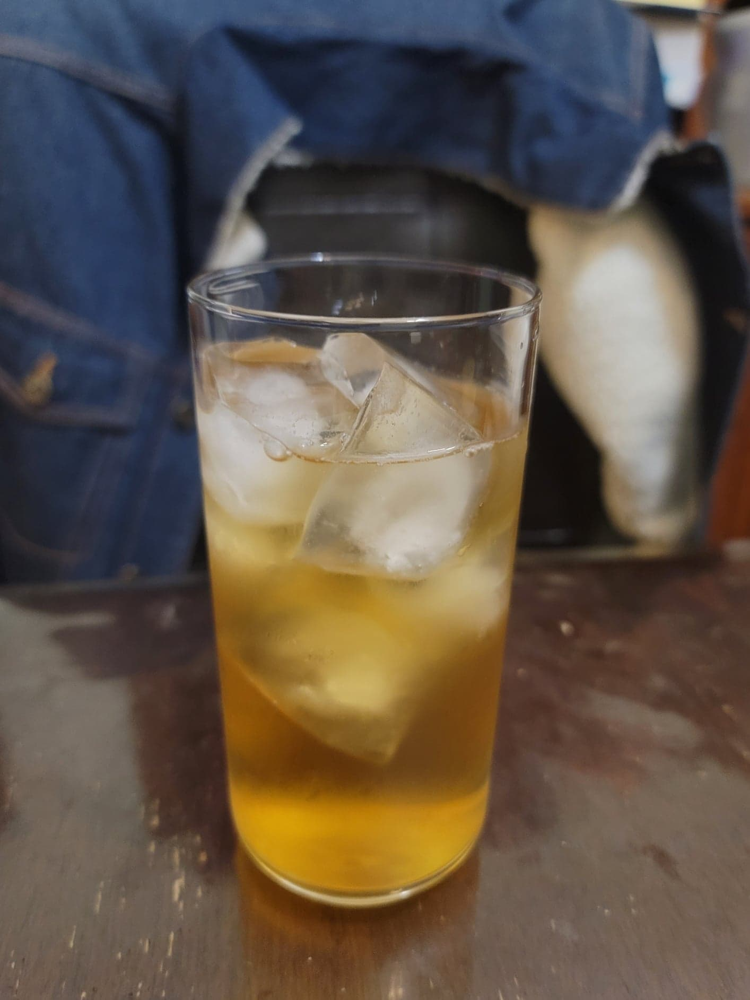

Kombucha

Ingredients:
- 2 cups Kombucha
- 1 Kombucha SCOBY
- 12 Water, nonchlorinated
- 3 tbsp Black tea
- 1 cup Sugar
Instructions:
- Bring 4 cups of water to a boil, then remove from heat. Add in the black tea and let steep for 10 minutes.
- Stir in the sugar until dissolved. Then add in the rest of the water. Check that the temperature is below 85 degrees Fahrenheit. If not, let rest until below 85 degrees Fahrenheit.
- Strain the tea into a 1 gallon jar with the kombucha and SCOBY. Cover with a cloth and rubber band and let ferment in a warm, dark location for 7-10 days for first fermentation.
- For second fermentation, strain into 16 oz flip-top bottles with 1-3 tsp sugar per bottle and let ferment for another 3-7 days, or until carbonated to preference. The transfer to a fridge and serve cold.